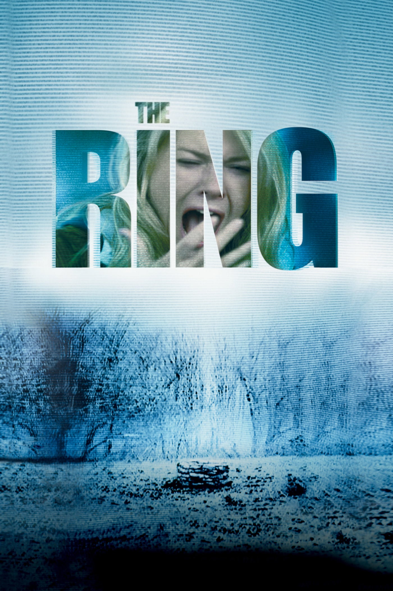
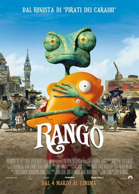
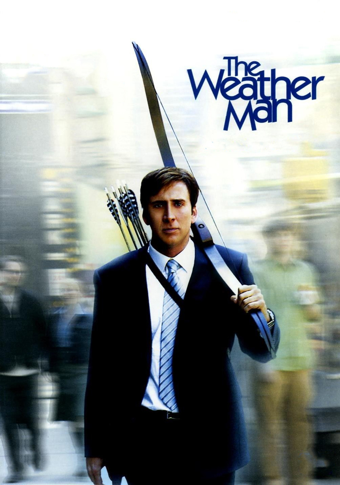
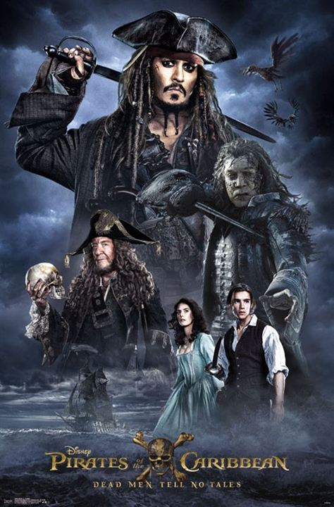

Après un court-métrage intitulé The Ritual, Gore Verbinski réalise en 1997 son premier long métrage, la comédie familiale La Souris, produite par les studios Dreamworks. Quatre ans après ce gros succès public, Gore Verbinski met en scène Le Mexicain, une comédie d'action romantique qui réunit pour la première fois à l'écran Brad Pitt et Julia Roberts.

Lorsque sa nièce trouve la mort foudroyée par la peur une semaine après avoir visionné une mystérieuse cassette vidéo, Rachel Keller, une journaliste de Seattle, décide d'enquêter sur ce fameux enregistrement. Aidée de son ex-mari Noah, elle découvre que cette cassette est porteuse d'une étrange malédiction : quiconque la visionne est condamné à périr dans de terribles circonstances.
Alors qu'il mène sa vie sans histoire d'animal de compagnie, Rango, caméléon peu aventurier, est en pleine crise d'identité : à quoi bon avoir des ambitions quand tout ce qu'on vous demande, c'est de vous fondre dans la masse ?
Un jour, Rango échoue par hasard dans la petite ville de Poussière, dans l'Ouest sauvage, où de sournoises créatures venues du désert font régner la terreur. Contre toute attente, notre caméléon, qui ne brille pas par son courage, comprend qu'il peut enfin se rendre utile. Dernier espoir des habitants de Poussière, Rango s'improvise shérif et n'a d'autre choix que d'assumer ses nouvelles fonctions.


Présentateur météo pour une chaîne de Chicago, David Spitz remet sa vie en question: brouillée avec son ex-femme, deux enfants qu'il ne voit que très rarement, un père atteint d'un cancer et une foule de mécontents de ses prévisions quotidiennes viennent assombrir le tableau. David accepte un poste à New York mais souhaite, au préalable, remettre un peu d'ordre dans sa vie privée avant son départ.
Dans la mer des Caraïbes, au XVIIe siècle, Jack Sparrow, flibustier gentleman, voit sa vie idylle basculer le jour où son ennemi, le perfide capitaine Barbossa, lui vole son bateau, le Black Pearl, puis attaque la ville de Port Royal, enlevant au passage la très belle fille du gouverneur, Elizabeth Swann. L'ami d'enfance de celle-ci, Will Turner, se joint à Jack pour se lancer aux trousses du capitaine.
